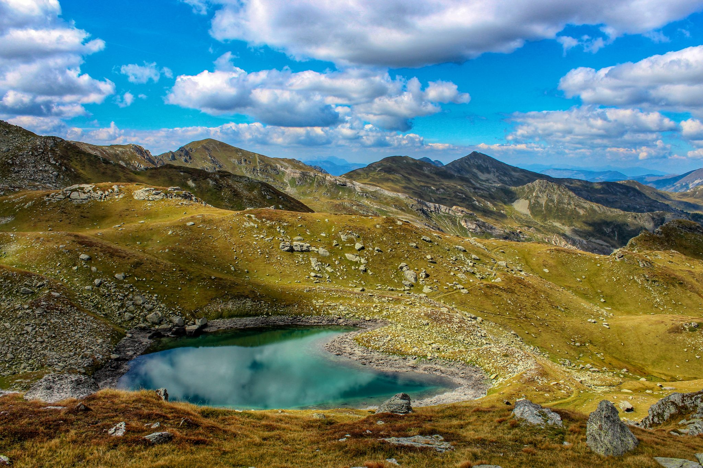
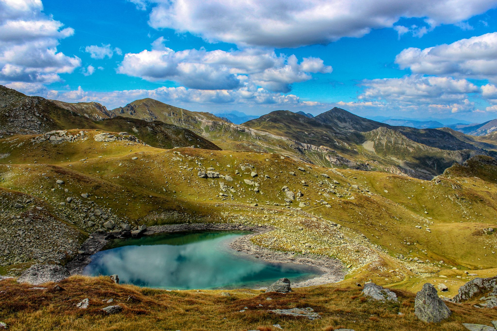

KOSOVO
Kosovo, self-declared independent country in the Balkans region of Europe. Although the United States and most members of the European Union (EU) recognized Kosovo’s declaration of independence from Serbia in 2008, Serbia, Russia, and a significant number of other countries—including several EU members—did not. Given this lack of international consensus, Kosovo was not immediately admitted to the United Nations (UN). In 2010 the International Court of Justice ruled that Kosovo’s declaration of independence did not violate international law, but Serbia rejected that decision.
 
